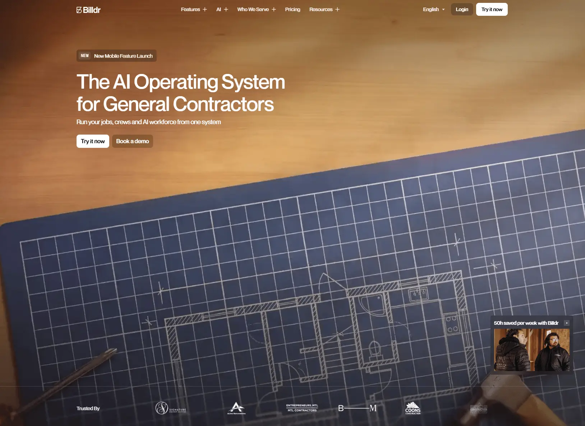

Billdr
- Многостраничный
- Сервисы и приложения
- ИИ-сервисы
- Архитекторам
- Строгий B2B
- Тёмная тема
- Синий фон
- Скроллителлинг
- Липкие секции
- Бегущая строка
- Микроанимации
- Интерфейс-диалог
- Webflow
- GSAP
- jQuery
- WebFont Loader
- Мультиязычный сайт
- Канада
- Действующий сайт

Что это
Платформа Billdr PRO ведёт дела строительного подрядчика в одной программе: заявки и клиенты, сметы, графики, бригады, счета и отчёты с площадки. Сайт объясняет продукт спокойно и по делу: крупный заголовок, фотографии настоящих строек, чертёж вместо декоративной графики и три ИИ-помощника с именами и лицами. Современный аккуратный сайт ИИ-платформы для строительных подрядчиков.
Что смотреть в первую очередь
Смотреть первый экран с проматываемым видео и блок с тремя ИИ-сотрудниками — на них держится вся подача. Дальше стоит открыть тарифы: там цены и состав пакетов.
Приёмы
- Скроллителлинг
- Липкие секции
- Бегущая строка
- Микроанимации
- Интерфейс-диалог
Интересные факты
- Первый экран — видео, которое не проигрывается само: кадры сменяются ровно на столько, на сколько человек прокрутил страницу, а ролик остаётся на месте, пока идёт прокрутка.
- Три «ИИ-сотрудника» выведены как персонажи с именами и аватарами — копилот Боб, сметчик Бруно, администратор Билли; разговор с Билли показан перепиской в мессенджере: вопросы клиента, ответы, уточнение адреса объекта.
- Под первым экраном логотипы клиентов едут бесконечной лентой, хотя их всего одиннадцать; движение включается отдельным скриптом, а не зацикленной гифкой.
- Сайт живёт на трёх языках — английский, французский (канадский) и испанский (мексиканский): у версий свои адреса /fr и /es, а в карте сайта для каждой указано, каким языкам она соответствует.
- Карта сайта в sitemap.xml перечисляет 833 адреса, а robots.txt открыт всем — включая ИИ-краулеров вроде GPTBot и ClaudeBot.
- В разметке есть структурированные данные schema.org: организация, приложение с ценами от 200 до 1400 долларов и блок «вопрос — ответ» для поисковой выдачи.
- Привычных счётчиков аналитики (Google Analytics, пикселя Facebook) в коде главной нет: если статистика и собирается, то не этими вставками.
Паспорт
- Домен
- billdr.ai
- Тип сайта
- Многостраничный
- Категории
- Сервисы и приложения
- Подкатегории
- ИИ-сервисы
- Для кого
- Архитекторам
- Стиль
- Строгий B2B
- Язык
- Мультиязычный, Английский, Французский
- Страна
- Канада, Монреаль
- Автор
- Billdr Inc.
- Год
- не указано
- Добавлен в коллекцию
- 08.11.2026
Палитра
-
#333340— 28% кадра -
#9E6E45— 18% кадра -
#505367— 17% кадра -
#C49964— 15% кадра -
#6A6C7F— 9% кадра
- Режим
- Тёмная
- Цвет фона
- Синий
Технологии
- Webflow
- GSAP
- jQuery 3.5.1
- WebFont Loader